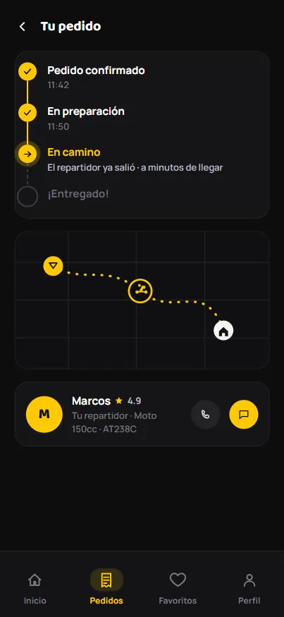
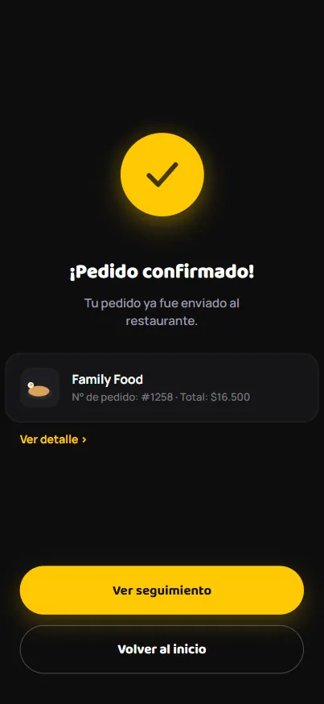

Marketplace digital
MODO YA
Un pedido, cuatro personas que necesitan cosas distintas. El trabajo de diseño fue ponerlas de acuerdo.



Resumen del proyecto
- Industria
- Comercio local y logística
- Producto
- Marketplace de varios lados: dos apps y sitio de lanzamiento
- Mi rol
- Producto, UX/UI y desarrollo
- Responsabilidades
- Requerimientos, roles y permisos, flujos, UI y sistema de diseño, sitio de lanzamiento, revisión previa
- Equipo
- Dos personas: Lucía Miranda y Álvaro González, en Codea Desarrollos, para una clienta de Malargüe
- Duración
- Septiembre – octubre 2026
- Herramientas
- Flutter, Supabase, Mercado Pago
- Estado
- Prelanzamiento. Las apps corren en Android y Windows; locales y riders pueden preinscribirse
Las pantallas de la app usan datos de ejemplo.
En un minuto
Problema
En Malargüe, los locales venden por WhatsApp o teléfono y cada uno resuelve el envío solo. El cliente no puede ver qué está abierto, pagar sin efectivo ni saber dónde está su pedido.
Enfoque
Traté cada pedido como un sistema con cuatro roles. Dos apps comparten un mismo motor de envíos, el servidor decide quién es quién y cada regla que la clienta no había definido pasó a ser configurable en lugar de inventada.
Resultado
Dos apps y un sitio de lanzamiento sobre un mismo sistema de diseño, 15 versiones en dos meses y una revisión completa con 15 hallazgos ordenados por gravedad antes de abrir al público.
01El desafío
Un pueblo con ganas de pedir, y sin app para hacerlo.
La clienta quería una plataforma local para dos cosas: que los vecinos pidan desde una app y que los locales usen una flota de riders para los pedidos que ya reciben por teléfono o WhatsApp.
Pensarlo como “una app de delivery” habría resuelto la pantalla del cliente y dejado a las otras tres personas improvisando. Cada pedido pasa por un cliente, un local, un rider y la administración, y el rol de la cuenta decide qué pantallas ve cada uno.
| Rol | Qué necesita | Dónde | Cómo entra |
|---|---|---|---|
| Cliente | Pedir comida o un mandado, pagar sin efectivo, seguirlo en vivo | MODO YA | Se registra solo |
| Local | Recibir pedidos o pedir un rider para los propios; actualizar menú y precios rápido | MODO YA | Lo da de alta la administración |
| Rider | Aceptar envíos cercanos y saber cuánto cobrar | MODO YA Rider | Lo da de alta la administración |
| Administración | Aprobar cuentas, fijar tarifas y ver la operación | MODO YA | Se crea a mano |
Objetivos de negocio
- Una sola plataforma local para pedidos y envíos
- Que los locales se sumen sin dejar WhatsApp
- Reglas que la clienta pueda cambiar sin un desarrollador
Restricciones
- Un equipo de dos personas
- Ubicación del rider en segundo plano: el permiso que más revisan las tiendas
- Reglas de negocio sin definir al empezar
02Investigación y descubrimiento
Preguntar primero por lo más caro de cambiar.
Antes de construir, todas las preguntas abiertas fueron a un documento para la clienta, ordenadas por cuánto bloqueaba cada una.
Primero, las que cambian cómo se construye: ¿el envío se paga en efectivo o digital?, ¿qué documentación se le pide a un rider?, ¿qué pasa con un pedido cancelado? Después, los números que se podían ajustar desde el panel. Cada pregunta explicaba por qué importaba y comparaba las opciones, así la clienta decidió primero lo más difícil de deshacer.
Evidencia
Lo que se sabía
- Los locales ya venden por WhatsApp y teléfono
- Cada uno resuelve el envío como puede
- Es probable que las tiendas rechacen la ubicación en segundo plano dentro de una app de clientes
Supuestos
Lo que se diseñó como hipótesis
- Los locales no van a dejar WhatsApp por una app nueva
- Ver tiempo y costo de envío desde el principio ayuda a elegir
- Una prueba de entrega evita discusiones
Pendiente
Lo que falta confirmar con uso real
- Cuánto tarda un rider en aceptar un envío
- El radio de búsqueda y la tarifa por kilómetro correctos
- El comportamiento con pedidos reales: la plataforma está en prelanzamiento
03Recorridos y flujos
Cuatro personas en cada pedido.
- AdministraciónAntesAprueba cuentas, fija tarifas y radio de búsqueda
- 1ClienteArma el pedidoTiempo y costo de envío visibles desde el primer listado
- 2ClienteConfirma y pagaDirección y medio de pago en una pantalla
- 3LocalLo preparaLos estados se actualizan para todos
- LocalSegunda entradaPide un rider para un pedido que llegó por WhatsApp
- 4RiderAcepta un envío cercanoSabe cuánto cobrar
- LocalLo entrega al riderCon un código de retiro
- 5RiderEn caminoVisible en el mapa del cliente
- ClienteLo sigue en vivoCuatro estados claros
- 6ClienteDa el código de 4 dígitosDespués califica la entrega
- RiderCierra la entregaSólo con el código
- AdministraciónDuranteSupervisa la operación
Cuando algo sale mal
En un producto de envíos, la confianza se gana o se pierde fuera del camino ideal. Estas son las situaciones que el diseño tenía que responder y los huecos que encontró la revisión.
| Situación | Respuesta | Estado |
|---|---|---|
| Figura entregado, pero no llegó | El rider sólo cierra el pedido con el código del cliente | Diseñado |
| Nadie acepta un envío | Radio y tiempo para aceptar se cambian desde el panel, sin otra versión | Configurable |
| Alguien se registra como local o administración | El rol viene del servidor, nunca del formulario de registro | Diseñado |
| El cliente elige transferencia | La app prometía pasar un alias que ninguna pantalla mostraba | Hallado en la revisión |
| Se corta la red en el panel de administración | Mostraba ceros y un cartel verde, sin ningún error | Hallado en la revisión |
| Uno a tres dígitos en el código de entrega | “Confirmar” se veía activo y no hacía nada | Hallado en la revisión |
Ese último lo reconstruí, con todos sus estados, en la página de inicio.
04Exploración de diseño
Las alternativas que descartamos y lo que costó cada elección.
Problema
¿Una sola app para todos?
El rider necesita ubicación en segundo plano. Dentro de una app de clientes, lo más probable es que rechacen la publicación.
Decisión
Dos apps sobre un sistema
MODO YA para clientes, locales y administración; MODO YA Rider aparte. El sistema de diseño y la lógica viven en paquetes compartidos.
Qué costó: dos apps para publicar y mantener a la par.
Problema
¿Sólo pedidos por la app?
Pedirles a los locales que dejen los canales por los que ya venden era perderlos.
Decisión
Marketplace y cadetería en un mismo motor
El local recibe pedidos por la app o pide un rider para uno que llegó por otro lado. Los dos usan la misma asignación por cercanía.
Problema
¿Quién confirma que llegó?
Sin una prueba, un pedido “entregado” que no llegó termina en discusión.
Decisión
Un código en cada entrega
Un código de retiro entre local y rider, y uno de 4 dígitos entre cliente y rider.
Qué costó: un paso más en la puerta.
Problema
¿Que cada uno elija su rol?
Cualquiera podría decir que es local o administración y ver lo que no le corresponde.
Decisión
Lo asigna el servidor
Los clientes se registran solos. Locales y riders reciben credenciales generadas por la administración.
Qué costó: locales y riders no pueden darse de alta solos.
Problema
¿Inventar los números que faltan?
Tarifa por kilómetro, radio de búsqueda y tiempo para aceptar no estaban decididos.
Decisión
Todo configurable
Los valores se cambian desde el panel. El kilómetro adicional arrancó en $0 a propósito, para no inventar un cobro que nadie había definido.
Qué costó: más ajustes para explicarle a la administración.
05Sistema de diseño
Negro, amarillo y un pedido a la vista.
El rediseño llevó la identidad de la marca a tokens, para que las dos apps y el sitio cambien juntos.
Color
- Amarillo
#F5C518 - Amarillo, hover
#FFD84A - Amarillo pálido
#FFF3C4 - Negro
#0A0A0A - Superficie
#1E1E1E - Gris
#F4F4F6 - Error
#D93A2B - Éxito
#1E9E5A
Auditoría de contraste
| Combinación | Muestra | Relación | Resultado |
|---|---|---|---|
| Amarillo sobre negro | 12,14:1 | AAA | |
| Negro sobre amarillo (botones) | 12,14:1 | AAA | |
| Texto gris sobre blanco | 6,70:1 | AA | |
| Error sobre blanco | 4,57:1 | AA | |
| Éxito sobre blanco | 3,45:1 | Sólo texto grande e íconos A oscurecer para texto |
Reglas que lo mantienen consistente
- El amarillo lleva acciones, precios y avance; el resto queda en grises
- Un botón principal por paso, al pie de la pantalla
- Los mismos cuatro estados en las dos apps: confirmado, en preparación, en camino, entregado
- Cada texto necesita un flujo detrás que cumpla lo que dice
06Solución final
De abrir la app a saber quién está en la puerta.

Elegir Tiempo y costo de envío antes de abrir un menú. 
Armar Cantidades, una nota y el total a la vista. 
Pagar Dirección y pago juntos, resumen abajo. 
Confirmar Una pantalla completa, no un aviso que desaparece. Seguir Estado, mapa y rider, con una forma de contacto.
Pagos
Tarjeta dentro de la app con Mercado Pago, transferencia o efectivo.
MODO YA Plus
Suscripción mensual con envío gratis, que se renueva sola y se da de baja de un toque.
Avisos
Notificaciones push, un sonido por rol y recordatorios de carrito abandonado.
Mandados
El cliente también puede pedir un rider para llevar o buscar algo.
Un sitio de lanzamiento que se recorre como un envío
El sitio le habla a tres públicos: vecinos, locales y personas con moto. Está organizado como la ruta de un rider: una línea punteada acompaña el scroll y cada sección es una parada.


07Implementación y colaboración
Dos personas, un mismo proceso de publicación y una lista de hallazgos.
Diseño y desarrollo compartieron la misma fuente: tokens y componentes en paquetes comunes, y reglas de acceso en la base de datos.
- Cada versión nueva se publica automáticamente desde el repositorio y las apps se actualizan solas en Android y Windows
- 55 migraciones de base de datos, con permisos definidos por rol
- Antes de lanzar recorrimos toda la app buscando huecos entre lo que dicen las pantallas y lo que el sistema puede cumplir: 15 hallazgos, ordenados por gravedad
Lo incompleto casi nunca está en el código a medio escribir, sino en el hueco entre lo que la pantalla promete y lo que el sistema hace.
08Resultados e impacto
Lo que se puede verificar hoy.
- 2 + 1apps y un sitio de lanzamiento, con un solo sistema de diseño
- 4roles con pantallas y permisos propios
- 15versiones publicadas entre septiembre y octubre de 2026
- 15hallazgos ordenados por gravedad antes del lanzamiento
No hay pedidos, tiempos de entrega ni retención porque la plataforma todavía no abrió al público. Es lo primero a medir.
09Aprendizajes y próximos pasos
Lo que haría antes la próxima vez.
Aprendizajes
- Un marketplace tiene cuatro usuarios, no uno: cada decisión se mira desde los cuatro lados
- Ordenar las preguntas por cuánto bloquean hizo que la clienta decidiera primero lo más caro de cambiar
- Haría la revisión de pantallas contra sistema en cada hito, no sólo antes de lanzar
Próximos pasos
- Cerrar los hallazgos pendientes, empezando por los de gravedad alta
- Medir cuánto tarda un rider en aceptar y ajustar el radio de búsqueda
- Sumar pantallas para reclamos y para que riders y locales vean sus liquidaciones